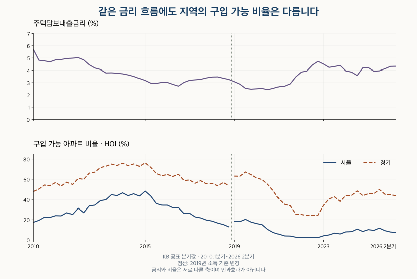

소득과 부담 · 금리와 구입 가능 비율
금리 1%p 오르면, 살 수 있는 아파트 비율은 얼마나 줄까?
서울·경기 KB HOI에서 금리가 크게 움직인 모든 분기의 구입 가능 비율을 비교합니다. 금리 1%포인트 상승의 가상 가격 한도 계산과 소득·가격분포의 차이를 구분합니다.
분석 기간 · 2010년 1분기~2026년 2분기 · 서울·경기 | 자료 기준일 · 공식 설명 확인 2026-10-16
금리가 1%포인트 오르면 살 수 있는 아파트 비율이 몇 %포인트 줄어들까요? 금리 변화만으로 정해지는 하나의 비율은 없습니다. 같은 소득과 상환 조건이면 감당 가능한 가격은 낮아지지만, 그 가격 사이에 아파트가 얼마나 모여 있는지에 따라 구입 가능 비율은 다르게 바뀝니다. KB의 서울·경기 분기 자료에서 실제 변화와 가상 계산을 나눠 확인합니다.
2026년 2분기 주거비를 고정하고 금리를 4.33%에서 5.33%로 올리는 가상 계산에서, 연 납입 기준 가격 한도는 약 8.19% 줄어듭니다. 이것이 살 수 있는 아파트가 8.19% 줄어든다는 뜻은 아닙니다. 실제 2025년 3분기에는 금리가 조금 올랐는데도 서울·경기의 구입 가능 비율은 함께 높아졌습니다.
KB의 ‘구입 가능 아파트 비율’에는 어떤 가정이 있나요?
주택구입잠재력지수(KB HOI)는 정해진 자금 조건으로 구입 가능한 아파트 재고를 전체 조사 재고로 나눈 값입니다. KB 공식 설명은 자기자금 30%, 소득 대비 주거비 33%, 20년 만기 원리금 상환을 가정합니다. 소득은 도시 근로자 가구의 3분위 소득이며, 금리는 한국은행의 예금은행 신규취급액 기준 가중평균 주택담보대출금리입니다.
분모는 KB부동산이 시세를 조사하는 아파트 재고입니다. 지금 매물로 나온 아파트만 세지 않으며, 특정인의 대출 승인액이나 구매 성공 확률도 아닙니다. 2019년에는 소득 통계 기준이 바뀌어 그 전후를 같은 기준의 변화로 연결하지 않습니다.
| 지역 | 금리 (%) | 월소득 (만원) | 가격 한도 (만원) | 가능 재고 (만호) | 전체 재고 (만호) | HOI (%) |
|---|---|---|---|---|---|---|
| 서울 | 4.33 | 671.14 | 50,123.50 | 10.95 | 148.02 | 7.40 |
| 경기 | 4.33 | 620.46 | 46,338.13 | 129.76 | 296.46 | 43.77 |
두 지역의 금리는 같지만 소득·가격 한도·재고 분포가 달라 비율은 다릅니다. 2026년 2분기 HOI는 서울 7.40%, 경기 43.77%입니다. 정의와 전체 분기값은 서울·경기 KB HOI 16년 비교에서 확인할 수 있습니다.
금리가 크게 올랐을 때 실제 비율은 얼마나 바뀌었나요?
확인한 큰 금리 변화 기간에서는 금리와 HOI가 반대로 움직였지만, 변화의 크기는 일정하지 않았습니다. 기간을 임의로 고르지 않도록 전분기 대비 0.5%포인트 이상, 전년 동분기 대비 1%포인트 이상 움직인 모든 비교를 선정했습니다. 상승과 하락을 함께 담고, 2019년 소득 기준 변경을 넘는 비교는 제외했습니다.

| 지역 | 비교 분기 | 금리 변화 (%p) | HOI 변화 (%p) | 월소득 변화 (만원) | 가격 한도 변화 (만원) |
|---|---|---|---|---|---|
| 서울 | 2012Q2 → 2013Q2 | -1.06 | +12.78 | +17.49 | +4,480.34 |
| 서울 | 2021Q1 → 2022Q1 | +1.19 | -2.98 | +49.49 | -706.97 |
| 서울 | 2021Q2 → 2022Q2 | +1.23 | -1.49 | +75.44 | +1,178.52 |
| 서울 | 2021Q3 → 2022Q3 | +1.53 | -1.37 | +14.75 | -5,044.51 |
| 서울 | 2021Q4 → 2022Q4 | +1.26 | -0.40 | +31.39 | -2,281.07 |
| 경기 | 2012Q2 → 2013Q2 | -1.06 | +13.03 | +15.43 | +3,954.41 |
| 경기 | 2021Q1 → 2022Q1 | +1.19 | -15.09 | +45.45 | -682.52 |
| 경기 | 2021Q2 → 2022Q2 | +1.23 | -10.89 | +69.44 | +1,061.70 |
| 경기 | 2021Q3 → 2022Q3 | +1.53 | -9.63 | +13.28 | -4,696.75 |
| 경기 | 2021Q4 → 2022Q4 | +1.26 | -1.00 | +25.25 | -2,385.71 |
서울의 네 상승 비교에서 금리는 1.19~1.53%포인트 올랐지만 HOI 하락 폭은 0.40~2.98%포인트였습니다. 경기도 같은 비교에서 하락 폭이 1.00~15.09%포인트로 달랐습니다. 각 창은 기간이 겹치므로 독립된 네 번의 금리 충격으로 볼 수 없습니다.
2022년 2분기는 공표 HOI와 함께 실린 재고량의 나눗셈이 일치하지 않는 알려진 예외입니다. 표는 공표 HOI를 유지했습니다. 그 분기를 양끝에 둔 비교를 빼면 지역별 다섯 비교 중 네 개가 남으며, 큰 금리 변화와 HOI가 반대로 움직였다는 방향은 같습니다.
전분기 금리 변화가 0.5%포인트 이상인 모든 비교
| 지역 | 비교 분기 | 금리 변화 (%p) | HOI 변화 (%p) | 월소득 변화 (만원) | 가격 한도 변화 (만원) |
|---|---|---|---|---|---|
| 서울 | 2010Q1 → 2010Q2 | -0.88 | +1.96 | -18.96 | +793.92 |
| 서울 | 2021Q3 → 2021Q4 | +0.57 | -1.12 | -26.19 | -4,545.28 |
| 서울 | 2024Q3 → 2024Q4 | +0.62 | -2.36 | -10.16 | -3,609.33 |
| 경기 | 2010Q1 → 2010Q2 | -0.88 | +2.51 | -18.88 | +532.05 |
| 경기 | 2021Q3 → 2021Q4 | +0.57 | -8.28 | -24.24 | -4,207.02 |
| 경기 | 2024Q3 → 2024Q4 | +0.62 | -4.64 | -9.11 | -3,237.52 |
지역별 세 비교입니다. 전년 동분기 표와 함께 보되 횟수를 더해 독립 사례 수로 해석하지 않습니다.
금리와 소득·가격 요인은 어떻게 나눠 봐야 하나요?
먼저 감당 가능한 가격을 정하는 쪽과, 그 가격 이하의 아파트 비율을 정하는 쪽을 나눕니다. 소득·주거비·금리·상환기간은 가격 한도에 영향을 줍니다. 그 한도에서 실제로 몇 %를 살 수 있는지는 주택가격의 분포와 조사 재고에 달려 있습니다.
2021년 2분기에서 2022년 2분기로 서울의 금리는 1.23%포인트 올랐지만 월소득도 약 75.44만 원 늘어 공표 가격 한도는 약 1,178.52만 원 높아졌습니다. 그동안 공표 HOI는 1.49%포인트 낮아졌습니다. 이 분기의 재고비율 예외를 감안하더라도, 소득과 금리가 함께 변한 실제 가격 한도를 금리 하나로 설명해서는 안 됩니다.
반대 방향의 사례도 있습니다. 모든 전분기 비교 중 금리와 HOI가 함께 오른 가장 최근 시점은 두 지역 모두 2025년 3분기였습니다. 금리는 0.03%포인트 올랐지만 공표 소득과 가격 한도도 늘었습니다.
| 지역 | 비교 분기 | 금리 변화 (%p) | HOI 변화 (%p) | 월소득 변화 (만원) | 가격 한도 변화 (만원) |
|---|---|---|---|---|---|
| 서울 | 2025Q2 → 2025Q3 | +0.03 | +2.23 | +44.98 | +3,335.33 |
| 경기 | 2025Q2 → 2025Q3 | +0.03 | +4.16 | +40.34 | +2,991.75 |
이는 ‘금리 인상은 구매력을 높인다’는 결과가 아닙니다. 다른 조건이 바뀌는 실제 시장에서는 금리와 비율이 같은 방향으로 움직일 수도 있다는 뜻입니다. 공표 자료만으로 금리·소득·집값이 HOI 변화에 각각 몇 %포인트 기여했는지 인과적으로 나누지는 못했습니다.
다른 조건을 고정하고 금리만 1%포인트 올리면요?
그 경우에는 상환 가능한 원금과 가격 한도가 낮아집니다. 아래는 2026년 2분기 공표 연간 주거비를 고정하고, 금리 4.33%와 5.33%를 비교한 가상 산술입니다. 자기자금 비율 30%와 20년 만기를 유지하고 매년 말 같은 금액을 갚는 것으로 계산했습니다.
| 지역 | 연 납입 가정: 이전 한도 (만원) | 연 납입 가정: 이후 한도 (만원) | 한도 변화 (%) | 월 납입 가정: 한도 변화 (%) |
|---|---|---|---|---|
| 서울 | 50,123.50 | 46,019.49 | -8.19 | -8.08 |
| 경기 | 46,338.13 | 42,544.06 | -8.19 | -8.08 |
서울의 계산상 한도는 약 5억 123만 원에서 4억 6,019만 원으로 낮아집니다. 같은 금리·기간을 쓰는 경기도 감소율은 약 8.19%입니다. 자기자금은 고정 금액이 아니라 집값의 30%라는 가정이므로 개인의 현금 예산 계산과 다릅니다.
연간 주거비를 12로 나눠 매월 말 상환한다고 가정하면 감소율은 약 8.08%입니다. KB의 설명은 20년 원리금 상환까지 밝히며, 이 글의 연 납입 산술이 모든 과거 공표 가격과 정확히 같지는 않습니다. 따라서 이 계산은 가정한 가격 한도의 변화로 읽어야 합니다. 이후 HOI의 예측값이나 개인 대출 한도가 아닙니다.
가격 한도가 8% 줄면 아파트 비율도 8% 줄지 않나요?
그 사이 가격대에 아파트가 몇 채 있는지 알아야 합니다. 가격 한도 하나와 그 이하 재고 비율 하나만으로는 새로운 한도 아래의 비율을 알 수 없습니다.
| 가상 분포 | 20채의 가격 | 나머지 80채 가격 | 10억 원 이하 | 9억 원 이하 |
|---|---|---|---|---|
| A | 8억 원 | 12억 원 | 20% | 20% |
| B | 9억 5,000만 원 | 12억 원 | 20% | 0% |
두 가상 분포 모두 10억 원 이하가 20%입니다. 한도가 9억 원으로 내려가면 A는 그대로 20%이지만 B는 0%가 됩니다. 이 표는 실제 서울·경기 재고가 아니라, 같은 출발 비율이어도 새 가격 문턱에서 결과가 달라질 수 있음을 보여주는 예시입니다.
보유 KB 자료에는 각 분기의 한 가격 한도, 구입 가능 재고, 전체 재고와 지수가 있습니다. 새 가격 한도마다 재고량을 다시 계산할 수 있는 동일 조사 대상의 전체 가격분포는 포함돼 있지 않습니다. 실제 거래의 가격분포나 다른 모형으로 추정한 아파트 재고를 대신 넣으면 원래 KB 지표와 분모가 달라집니다.
내 예산에 적용하기 전에 무엇을 확인하나요?
- 금리와 상환 조건을 적습니다. 시장 평균금리와 실제 제시받은 금리, 남은 기간과 상환방식을 구분합니다.
- 월 현금흐름과 자기자금을 따로 봅니다. 같은 월 납입 예산이라도 실제 대출 가능액과 보유 현금, 거래비용은 별도 조건입니다.
- 가격 한도와 원하는 주택의 범위를 맞춥니다. 지역·면적·상태가 다른 아파트까지 포함한 지표 비율을 개인의 선택지 수로 읽지 않습니다.
- 실제 후보의 가격과 매물 여부를 확인합니다. 지표가 좋아져도 원하는 생활권의 주택이 그 예산에 있는지는 따로 살펴봐야 합니다.
금리 인상으로 같은 조건의 상환 부담이 커진다는 산술은 유용합니다. 다만 그것을 ‘서울 아파트 몇 %를 더 못 산다’는 수치로 바꾸려면 같은 시점의 가격분포가 더 필요합니다. 실제 분기 비교에서는 소득과 가격 한도의 변화도 함께 읽는 것이 출발점입니다.
자료·선정 규칙·가상 계산 방법
KB 주택구입잠재력의 서울·경기 2010년 1분기~2026년 2분기 공표값을 사용했습니다. 원자료 수집일은 2026년 10월 3일이며, 공식 설명은 2026년 10월 16일 재확인했습니다. 화면은 2026년 8월 업데이트로 표시했습니다. 분기 표시는 관측 시점이며 공표일과 다릅니다. 2026년 연간 결과로 확대하지 않습니다.
기존에 공개한 132개 분기·지역 관측의 공개 파일(JSON)만 재계산했습니다. 전분기·전년동분기 비교 254개를 두 방법으로 대조하고 2019년 소득 기준을 넘는 비교는 선정에서 제외했습니다. 2022년 2분기 재고비율 예외 두 지역은 공표값을 유지한 표와 해당 끝점 제외 결과를 구분했습니다.
가상 가격 한도는 20년간 각 납입액을 가정 금리로 할인해 합한 뒤 0.7로 나눴습니다. 연 납입은 공표 연간 주거비, 월 납입은 이를 12로 나눈 금액과 연 금리의 12분의 1을 사용했습니다. 동일한 산술을 별도로 검산했습니다. 2015년 4분기·2017년 2분기 두 지역은 연 납입 계산과 공표 가격에 차이가 있어 원값을 수정하지 않았습니다. 서울 2015년 4분기는 소득으로 계산한 주거비와 공표 주거비에도 차이가 있습니다.
가상 분포는 조건의 차이를 설명하기 위한 예시이며 실제 주택·가구·대출 자료를 복원한 것이 아닙니다. 금리와 HOI의 동반 변화를 인과효과나 매수 시점 추천으로 해석하지 않습니다. 지표의 공식 정의는 KB 데이터허브에서 확인할 수 있습니다.
분석·집필: 파파펭귄 (Nobot Kang). 에이전트로 공식 정의 확인·독립 산술 대조·도표 제작과 초안 검토를 보조했습니다.